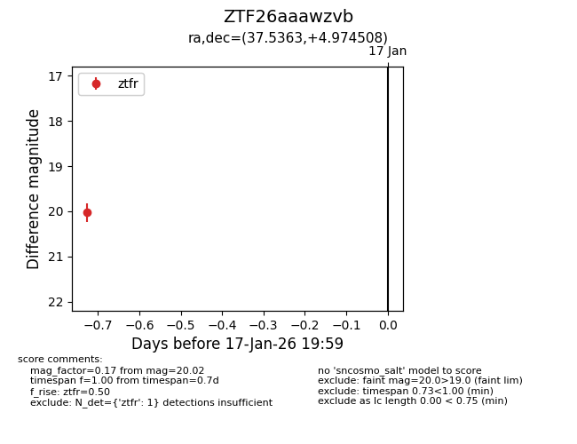
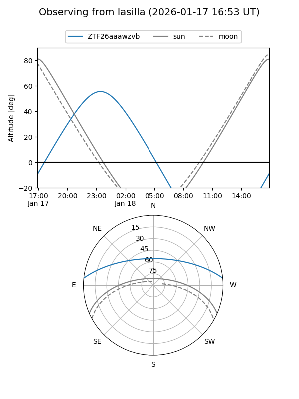
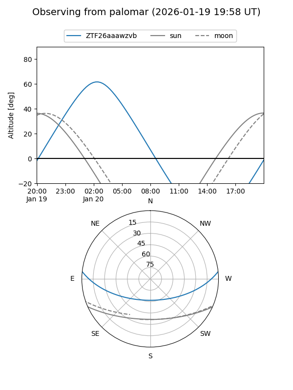

ZTF26aaawzvb
Target ZTF26aaawzvb at 2026-01-17 20:02
Aliases and brokers:
FINK: link
Lasair: link
ALeRCE: link
alt names
ZTF26aaawzvb (ztf,fink_ztf)
Coordinates:
equatorial (ra, dec) = 37.5363,+4.97451
equatorial (HMS+DMS) = 02:30:08.72,+04:58:28.23
galactic (l, b) = (163.2602,-50.00727)
Flags:
Photometry:
last ztfr=20.02
1 ztfr detections
Lightcurve

Visibility


Additional plots